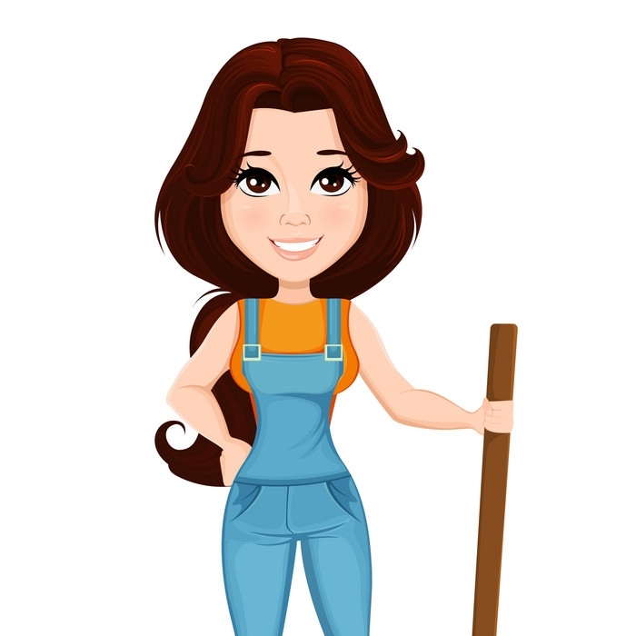

AI Helps in Growth of Algae for Producing Clean Biofuel.
Machine learning is being used by researchers to aid cell growth and prevent mutual shading. A sedimentation approach based on aggregation is also being developed to accomplish low-cost biomass collection and cost-effective semi-continuous algae production (SAC). Algae has so much potential as a biofuel source that scientists have been researching it for a long time. They also constructed 3D printed artificial algae leaves to supply oxygen for our Mars explorations. Now, Texas A&M AgriLife Research experts are utilizing artificial intelligence to set a new world record for generating algae as a reliable biofuel source, paving the way for a greener and more cost-effective fuel source for jet planes and other modes of transportation.
 Rohan Mittal
Age 37
Rohan Mittal
Age 37
Stubble Burning in India: Causes, Effects & Measures
Stubble burning also known as Parali in local language is a practice of intentionally setting fire to the crop residue that includes stems (stubble), leaves, stalks, and seed pods of the yielded crops such as paddy. It is usually being done in the areas where combined harvesting methods are used. This technique is still being practiced on a large scale in India. Stubble burning also known as Parali in local language is a practice of intentionally setting fire to the crop residue that includes stems (stubble), leaves, stalks, and seed pods of the yielded crops such as paddy. It is usually being done in the areas where combined harvesting methods are used. This technique is still being practiced on a large scale in India.
Kritika Madhukar Age 45Top 10 NGOs Helping Indian Farmers In Growing & Sustaining Crops!
In this article, we have listed out Top 10 NGOs that are working hard to empower the farmers of rural India in growing & sustaining their crops. Farming has always been the most important economic activity in India. According to government data, more than half of India's population depends on agriculture for a living, with the majority of these being small and marginal farmers. Poor infrastructures, lack of modernity, and diminishing production have made it difficult for Indian farmers to come out from the debt and poverty cycle. Thousands of farmers take their own lives each year as a result of crop failure and inability to repay debts.
 M Kanika Age 35Profitable Cold Storage Business: Requirements, Cost- Profit Analysis & Government Subsidy
Cold Storage For Vegetables has high demand in our India. Due to insufficient and lack of proper Cold Storage For Vegetables many vegetable become wastage. Cold storage is a highly profitable business. In our country, there is a significant need for Cold Storage for Vegetables. Many vegetables are wasted as a result of inadequate and improper Cold Storage for Vegetables. Cold storage is a lucrative business. Cold storage is in high demand in both developed and developing countries. According to the storage facility, there are two types of cold storage that are in high demand!
Ayushi Raina Age 40